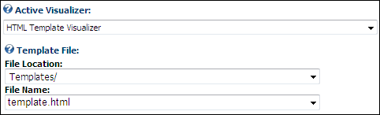
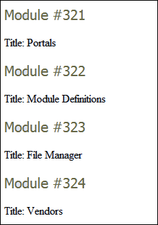

The HTML Template Visualizer uses an HTML Template file to display the data retrieved in the report. The template file is processed once for each row and then rendered as a list. Each Template is processed by locating tokens of the form [Column Name] in the Template and replacing them with the value of Column Name in the returned dataset. The HTML Template Visualizer automatically processes every row retrieved from the data source. If you wish to display just one row, or a smaller set of rows, you must change the Data Source to have it return only the rows you need.
Here's how to configure the HTML Template Visualizer settings on the Active Visualizer:

E.g. The following HTML Template was used to produce the output seen below.
Module #[ModuleID]
Title: [ModuleTitle]

Example of HTML Template